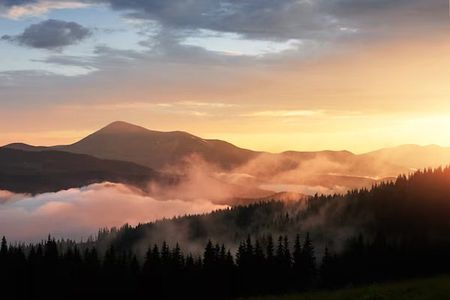
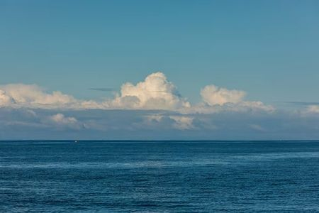
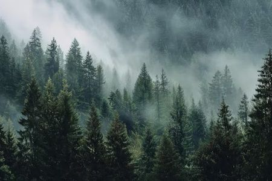
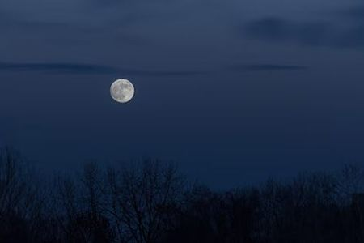

Project 1 Photo Gallery
Each thumbnail below is a 100-pixel-wide preview. Click any image to open the full 600-pixel-wide version. Both sizes were exported as web-optimized JPEGs to keep the page fast.
Featured Images
{kind=link}

{kind=link}

{kind=link}

{kind=link}

Photo Credits
All four photographs were downloaded free of charge from Magnific (formerly Freepik) and are used here under Magnific's free-content license, which requires attribution to both the platform and the individual photographer for each image.
- "Beautiful sunset in the mountains. Landscape with sun light shining through orange clouds and fog." by standret, via Magnific (Magnific free license).
- "Perfect view of sky and water of ocean" by diana.grytsku, via Magnific (Magnific free license).
- "Misty conifer forest landscape" by muhammad.abdullah, via Magnific (Magnific free license).
- "Full moon in the dark sky during moonrise" by wirestock, via Magnific (Magnific free license).
No modifications were made to the original photographs beyond resizing and re-exporting as web-optimized JPEGs for the thumbnail and full-size versions used on this page.
How These Images Were Prepared
Each photo was scaled with image-editing software to a full version no wider than 600 pixels and a thumbnail no wider than 100 pixels, both maintaining the original aspect ratio, then exported as web-optimized JPEGs so the gallery loads quickly even on a slow connection.